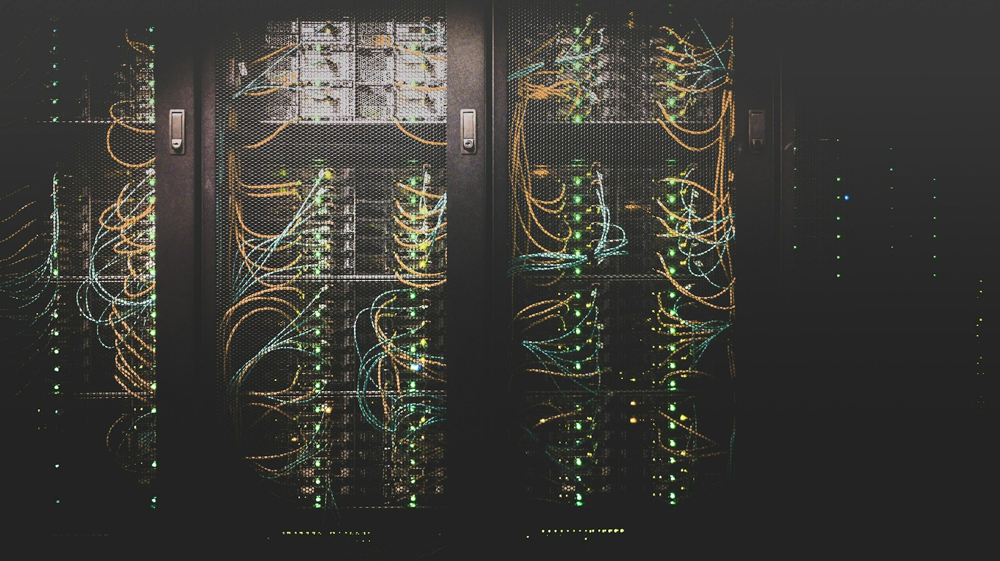

架构梳理
盘点应用、数据和接口之间的关系，识别依赖与维护重点，为迭代建立共同语言。

从实际任务出发，明确每一项工作的范围与连接方式。
盘点应用、数据和接口之间的关系，识别依赖与维护重点，为迭代建立共同语言。
围绕具体角色与工作场景设计功能，从页面交互到服务接口协同推进。
关注配置、可观测性与交接资料，让系统交付之后仍然容易理解和管理。
两者都可以从范围讨论开始。新项目重视结构规划，已有系统则优先厘清依赖与改造顺序。
在实施前共同列出功能、接口、文档及验收方式，变更时再讨论对应影响。
了解系统组成、业务约束与团队的日常操作。
讨论模块职责、数据通路与逐步实施计划。
按阶段验证功能与运行方式，完成技术交接。